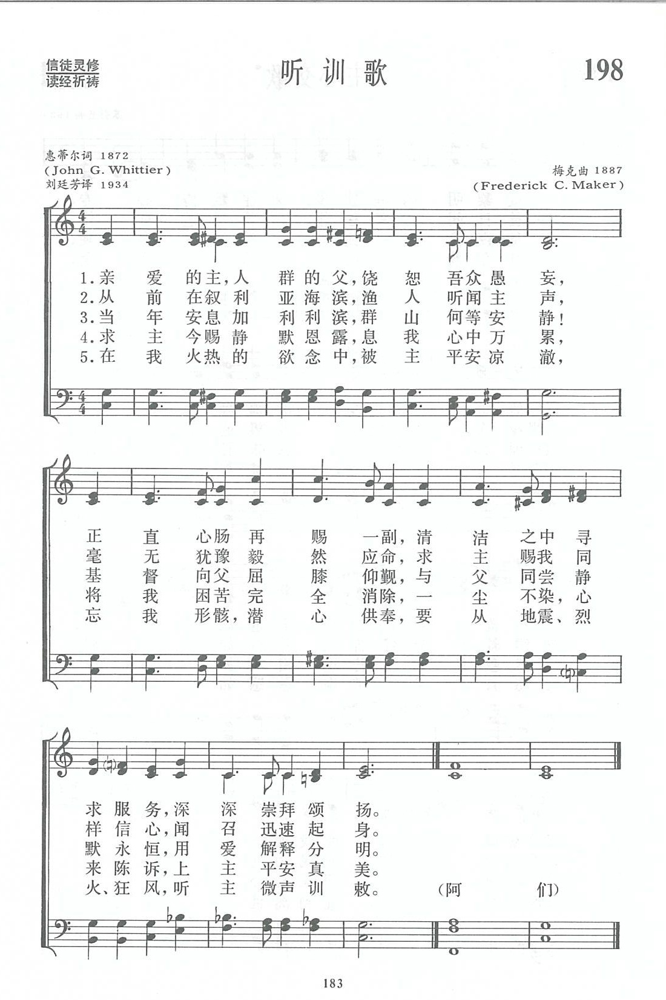

1616 Dear Lord and Father of Mankind
_John
Greenleaf Whittier
聽主微聲 (听训歌)
▲
| 簡介
Dear
Lord and Father of Mankind |
| These stanzas were carved into a hymn
from a much longer poem describing a frenzied ritual by an obscure sect
in India, but they culminate in a reference to 1 Kings 19:11–12 that
celebrates silence (as befits a Quaker poet). This tune was created
especially for these words. |
Dear Lord and Father of mankind
Author: John Greenleaf Whittier (1872)
Tune: REST (Maker) |
|
|
1 Dear Lord and Father of mankind,
forgive our foolish ways;
reclothe us in our rightful mind,
in purer lives thy service find,
in deeper reverence, praise.
2 In simple trust like theirs who heard
beside the Syrian sea
the gracious calling of the Lord,
let us, like them, without a word
rise up and follow thee.
3 O Sabbath rest by Galilee,
O calm of hills above,
where Jesus knelt to share with thee
the silence of eternity,
interpreted by love!
4 Drop thy still dews of quietness,
till all our strivings cease;
take from our souls the strain and stress,
and let our ordered lives confess
the beauty of thy peace.
5 Breathe through the heats of our desire
thy coolness and thy balm;
let sense be dumb, let flesh retire;
speak through the earthquake, wind, and fire,
O still, small voice of calm!
Source: Glory to God: the
Presbyterian Hymnal #169
|
親愛的主，人類的父，
恕我愚昧頑梗，
重新賜我正直心靈，
事奉殷勤，
生活聖潔，
更深頌讚崇敬。
從前在加利利海濱，
恩主呼召漁人，
我願立志仿效門徒，
充滿信心，
毫不猶豫，
立刻跟從救主。
求主賜下寧靜甘露，
解我愁煩困苦，
消除心靈一切重負，
讓主作王，
一生順服，
得享甜美安舒。
每當慾念如火焚燒，
求主平息散消，
逃避私慾，
攻刻己身，
在狂風烈火，地震中，
聽主寧靜微聲。 |
|
https://www.xueshengshi.com/?p=11006
听训歌
https://musescore.com/user/13028/scores/5981078


https://hymnary.org/hymn/GG2013/page/246
|
| |
|
http://www.hymncompanions.org/Dec/16/stream.php
親愛的主，人類的父，
恕我愚昧頑梗，重新賜我正直心靈，
事奉殷勤，生活聖潔，更深頌讚崇敬。
從前在加利利海濱，
恩主呼召漁人，我願立志仿效門徒，
充滿信心，毫不猶豫，立刻跟從救主。
求主賜下寧靜甘露，
解我愁煩困苦，消除心靈一切重負，
讓主作王，一生順服，得享甜美安舒。
每當慾念如火焚燒，
求主平息散消，逃避私慾，攻克己身，
在狂風，烈火，地震中，聽主寧靜微聲。
 (請點耳機收聽)
(請點耳機收聽)
蔚提爾（John Greenleaf Whittier, 1807-1892）是十九世紀美國著名的詩人和散文家之一，他出生在俄勒岡州波特蘭的一個貧農家中。
童年時因家貧無力上學，他在農場幫助家人耕作。

他的父母是貴格會信徒，教導他讀聖經，他由讀經開始識字，以後涉獵其他文學作品。他最愛讀蘇格蘭詩人柏恩斯（Robert
Burns）的田園詩，漸漸地他也試作短詩。因他自幼熟讀聖經，這奠定了他信仰和道德的基礎。在他十九歲時，他的姊姊將他的作品寄給雜誌社，編輯賞識他的才華，特登門造訪，鼓勵他入學進修。
他的鄰居知道他無力繳付昂貴的學費，授其縫製女裝手藝，他在半工半讀下，修讀了二年新聞編輯。
日後他卻成為美國東岸各大城市的名記者和編輯，他以文字力陳黑奴制度的弊端，鼓吹廢奴，以致在當時文壇中被孤立。他在苦鬥中，從事文藝活動達六十年之久。
這首歌摘自蔚提爾在1872年所寫的一首長詩「索麻汁的釀造」（The Brewing of
Soma）。全詩共十七節，每節五行。
前十一節，描述飲汁後的興奮與騷動。傳說索麻汁是印度的祭司用牛奶與蜜釀造而成，喝後人會迷幻與眾神明合一，狂歌歡舞。後六節詩是強烈的對比，頌讚寧靜的與神靈交。
當時有些基督徒認為喝些祭壇上留下的酒，有助與神靈交，但蔚提爾意在破除這迷信，他認為祇有在寧靜中才能與神親密的交通，因為在喧嘩時，聽不到神的聲音。
這首長詩的寓意是：在當今的世代中，人們追逐名利，世俗歡樂，而不留片刻，沉思默想自己與神的關係。
蔚提爾對聖詩知道得不多，因為當年貴格會重視安靜，聚會時不准唱詩。 他一共寫了七十五首詩歌，他的詩音調優美。
蔚提爾自謙地說：「我不是一個真正的聖詩作者，因為我不懂得音樂，因此我的詩適合歌唱的不多。 一首好的聖詩必須能對人的心靈有裨益，我不敢說我寫過一首成功的詩。」
這首詩歌由梅格（Frederick C. Maker, 1844-1927,見十月十七日）譜曲。
中英文聖詩集參考
英文歌名 Dear
Lord and Father of Mankind
頌主新歌 419
頌主新歌(中英雙語) 423
生命聖詩 436
新聖詩 14
歡欣讚美 639
聖詩 482
台語聖詩 286
恩頌聖歌 431
頌主聖詩 384
讚美詩(新編) 198
青年聖歌II 5
校園詩歌II 51
http://www.xueshengshi.com/?p=11006
（来源：《赞美诗新编史话》）
听训歌 Dear Lord and Father of mankind
经文：“你的话是我脚前的灯，是我路上的光 ” (诗 119：105)
这首 《听训歌》是从美国诗人惠蒂尔(事略参阅第50首)的一首十七节的长诗中选出来的五节，原题为《酿造苏马 (BREAWING OF
SOMA)》。苏马是印度的一种热带植物，据传东印度的印度教信徒从该树中提取汁液。此汁液有麻醉作用,凡喝该汁的人,一时昏迷不醒，印度人便认为喝苏马汁的人有与神祗交往的经验。能以产生似梦似痴的狂热，像醉后的狂欢。惠氏借用这种传说，认为基督教如果没有真正的崇拜，也就像喝了麻醉药酒一样。在《酿造苏马》的最后，他以这首祈祷诗《听训歌》结束，说明基督教的崇拜是灵性的提高，听闻更高的呼召，实行更美的人生。
这首诗的美致还在于惠氏把圣经里的图画，以新的含义重现在我们的眼前。
第一节的第三句“正直心肠再赐一副”，原词是“让我们重新穿上正确的思想”，反映出格拉森地方那个被群鬼所附的人，经耶稣治好之后，“穿上衣服，心里明白过来”
(可5：15)。我们服务真神应在“清洁之中，寻求服务”；我们敬拜主，不在表面的狂欢和精神的麻醉，而在心灵深处的“崇拜颂扬”；
第二节回想到马可福音第 1章第17节所载，耶稣在叙利亚海滨呼召门徒的往事，提醒我们也当迅速应召；
第三节至第五节特别着重贵格会 (见第94首注①)所强调的静中见主，从耶稣“上山祷告，整夜祷告神”的光辉榜样
(路6：l2)，说明“静默恩露”，归结到先知以利亚在何烈山上的经验一要超脱地震、烈火、狂风的表面现象，听到主微小的声音 (王上 1 9：11-12)。
http://cb.immanuel.net/cb/hymn/Hymn.asp?HymnID=31
|
|
Dear Lord and Father of
Mankind |
惠提爾 |
John Greenleaf Whittier |
親礙的主，人類的父，恕我愚昧頑梗，
重新賜我正直心靈，事奉殷勤，
生活聖潔，更深頌讚崇敬。 |
Dear Lord and Father of mankind, Forgive
our foolish ways;
Reclothe us in our rightful mind; In purer lives Thy service find,
In deeper rev'rence, praise. |
|
這首聖詩的作者,乃是美國近代一位著名的詩人,也是一位散文作家:惠提爾(John Greenleaf
Whittier,1807-1892).然而,想不到他原來生長在美國
波特蘭(Portland)一個貧窮的農村家庭中,幼年因為貧窮,所以無法如願上學,只能留在家中,並在農場協助家人耕種,可是好學的他,並沒有因此而放棄他的理想而能自己利用時間機會學習識字,並開始閱讀聖經及其他文學作品,特別是農民詩人朋斯(Burns)的詩,於是漸漸開始懂得品嚐及欣賞別人的作品,甚至自己也動起筆來寫些簡單的短詩,並且從讀得爛熟的聖經中給他生活道德上及將來創作聖詩的神學基礎上相當大的幫助。
在十九歲那年,他的才華終於被一家雜誌社所發覺,並且第一次刊出他的作品,而該雜誌的主編也特意登門拜訪,鼓勵他入學進修,幸而一位鄰居知道他無力繳交昂貴學費,而在短時間內教會他精製婦女時裝的技術,才使他在半工半讀之下完成了學業。
果然他的文筆大為進步,也成為一位反對黑奴運動的"廢奴詩人",他的每一首詩都有一種甜美純潔的感情,而所作的聖詩,也在當時貴格會重視安靜的緣故,而不重視唱詩的情況下,居然能夠被保留了五十餘首作品,實屬難得,然而他卻謙虛的說:"我不是一個真正的聖詩作家,因為我不懂得音樂,我所寫的詩只有幾首適合歌唱,因為一首好聖詩必須能裨益人的靈性,我真不敢說我曾寫過成功的聖詩".事實上這首"聽主微聲"就是一首名歌,主題乃是述說著宗教的真諦乃在於寧靜與服務,而該詩原來有五節(有些唱詩本為六節),但生命聖詩中只編入了四節。
(資料整理:葉俊明) |
| ©1997-2021 Immanuel.Net,
All Rights Reserved. |
https://christiantimes.org.hk/Common/Reader/News/ShowNews.jsp?Nid=44991&Pid=1&Version=0&Cid=150&Charset=big5_hkscs
電影《愛．誘．罪》（Atonement）中，英、法盟軍在鄧苟克港口等待大規模撤退（Dunkirk
evacuation）的那一幕，一班軍人在唱聖詩。那首聖詩的旋律很熟悉，可是我卻怎樣也想不起聖詩的名字。
心有不甘，回家後翻開家中的詩集，終於找出答案。真丟臉！那是一首基督徒「應該」很熟悉的聖詩
，〈眾生之神〉（《恩頌聖歌》第四三一首）或譯〈聽主微聲〉（英文版本“Dear Lord and Father of Mankind”）！
在二○○五年英國廣播公司舉行的一項全國最喜愛的詩歌民意調查中，“Dear Lord and Father of
Mankind"就被選排名第二。而第一位，也是華人教會很熟悉的“How Great Thou Art" （中文翻譯：〈?真偉大〉）。
我所屬的教會比較「傳統」，每星期的崇拜所唱的詩歌必定是從《生命聖詩》或《恩頌聖歌》裡挑選。多年來，這首《眾生之神》已經唱過沒有一百次也有五十次吧？在倫敦的時候，到All
Soul's Church
崇拜也經常唱這聖詩。但我對這首聖詩的印象，只是依稀記得的旋律，和大概有些關於「烈火、風暴、地震」等驚天動地的歌詞。這首聖詩就如其餘我所唱過的一千幾百首詩歌一樣，於我只是流過鴨背的水、過眼的一縷雲煙。
我對於自己這樣「唸口簧」式唱詩的狀態甚為不滿，於是決定好好地了解這首聖詩。
〈眾生之神〉原來的英文版本，六段的歌詞全取自一位十九世紀美國貴格會信徒詩人John G. Whittier所寫的一首詩“The Brewing of
Soma”，大概可譯為〈蘇麻的釀製〉。
相傳蘇麻是印度古教吠陀教在禮儀中所用的奠酒，用蜜糖混和牛奶所調製，據說帶有迷幻作用，喝了使人興奮，狂歌起舞。吠陀教徒相信喝蘇麻後的迷幻狀態，能使他們和諸神交通。
看到這樣的標題，已經有點手心冒汗……全詩共有十七段，每段五行；頭數段描繪喝過蘇麻，人會得到激烈、瘋狂的屬靈經歷，而且「有病治病、無病重生」。讀到這裡，我幾乎肯定我所看的資料出錯：一首如斯正統的聖詩，怎會以這種描述膜拜異端邪術的詩作為歌詞？！
但在第十二段，Whittier突然提到那位「慈悲的父、眾生之神」，那獨一的主。原來當時很多基督徒也認為喝了祭壇的酒，可以讓他們與神更親近。他們相信透過追求亢奮的屬靈經歷，才能與神交通。
詩人在首十一段的鋪排，就是以當時最流行的敬拜文化來引人入勝，然後在最後的六段，亦是詩歌所摘錄的六節歌詞，陳設出強烈的對比。他要打破當時基督徒的迷信：先求父神「寬恕我們的愚頑，求主使我們歸正，更新我們的意念」（歌詞第一節），如詩篇五十一10所求的；然後「立志像當年門徒，回應耶穌的呼召，投歸耶穌」（第二節）。
詩人更在第三節指出，要和父神有親密的交通，是要學習耶穌，在幽靜、安寧中，透過禱告，以心以愛溝通。神所賜得平安、慈恩，如甘露又像昔日所降嗎哪，悄靜無聲，卻永居我們的心靈；平熄心火的激情、安鎮我們的言行和肉體的衝動，使我們的人生循規律，彰顯主的平安美善。（第四至六節）。
在廿一世紀的香港，基督徒肯定不會喝蘇麻，大概也不會追喝聖餐的杯；但確實有不少基督徒追求唱詩要唱到嚎哭、祈禱要說沒有人懂也沒有人懂得翻譯的「方言」、受醫治要被「擊倒」、滾地才是更「屬靈」。另外有些，已經在恆指、次按、通漲、加價、有四百萬才敢生孩子，以及個半月前已經訂不到位吃大餐的聖誕之中，方寸大亂了。
求主幫助我們，「在烈火、風暴、地震中，能聽祢輕柔聲。」
「聽祢柔和微聲。」
https://www.umcdiscipleship.org/resources/history-of-hymns-dear-lord-and-father-of-mankind
Dear Lord and Father of
Mankind" John Greenleaf Whittier
The United Methodist Hymnal, No. 358
John Greenleaf Whittier
Dear Lord and Father of mankind, Forgive our foolish ways;
Reclothe us in our
rightful mind,
In purer lives thy service find,
In deeper reverence, praise.
This hymn’s origin is a paradox. John Greenleaf Whittier (1807-1892)
worshipped in the tradition of the Society of Friends, also known as Quakers.
Traditionally, Quakers have not sung in worship, but value silence, waiting for
the “still, small voice” of God.
According to accounts Whittier had been reading in Max Müller’s The Sacred
Books of the East about the use of soma, a plant found in northwest India. Soma
was used to prepare an intoxicating drug that was ingested in religious rituals,
resulting in a state of frenzy.
This hymn began as a part of a long narrative poem, “The Brewing of Soma,”
published in The Atlantic Monthly in 1872. The poem describes Vedic priests
going into the forest, brewing a drink from honey and milk, and drinking
themselves into a frenzy. Whittier was critical of those who believed they might
find God through unbridled ecstasy, such as the hysterical camp meetings and
revivals common in his day.
Whittier’s response was a 17-stanza poem, of which stanzas 12-17 have been
excised to form the hymn as found in many hymnals. The preceding stanza sets the
context for our hymn:
And yet the past comes round again, And new doth old fulfill; In sensual
transports wild as vain We brew in many a Christian fane The heathen Soma still!
Stanza one then begins,
“Dear Lord, and Father of mankind, forgive our foolish ways….”—a complete
antithesis to the “transports wild” in the preceding verse. Rather than frenzy,
true praise is expressed in “deeper reverence.”
Whittier then continues with biblical examples of simplicity and serenity.
Stanza two alludes to the “simple trust” of the disciples who heard the
“gracious calling” of Christ. Like them, we should rise “without a word” and
follow the Master.
Stanza three
has one of the most beautiful phrases in 19th-century Romantic poetry.
The context is that of “Sabbath rest” by the sea with the “calm of hills above.”
It was in this serene setting that Christ came to pray in “the silence of
eternity, interpreted by love!”
The fourth stanza
maintains the sense of tranquility: “Drop thy still dews of
quietness,/till all our strivings cease.” In this stanza the poet employs the
device of onomatopoeia by choosing words throughout with an “s” sound—“dews,”
“quietness,” “strivings,” “cease” and so on. The skill of the poet is evident in
a tour de force of sibilant sounds evoking serenity.
The final stanza
evokes images of breathing and calm, closing with a magnificent
antithesis: “Speak through the earthquake, wind, and fire,/ O still, small voice
of calm.”
Whittier was one of the most important of the 19th-century American poets.
The New Englander was a Quaker abolitionist, reared in a large farmhouse in the
rural setting of Merrimac Valley at East Haverhill, Mass. The Whittier homestead
remains a museum open to the public.
The Victorian tune REST by Frederick C. Maker (1844-1927) was actually
composed for American poet W.B. Tappan’s hymn, “There is an hour of peaceful
rest.” British hymnals have embraced Whittier’s hymn, but prefer the tune REPTON
by the famous English composer C.H.H. Parry.
English hymnologist J.R. Watson summarizes well the contribution of this
hymn: “It is the opposite end of the devotional spectrum from those hymns which
encourage activity and energy; but everyone experiences the need for quiet
meditation at some time, and this hymn encourages an almost mystical
contemplation of the peace of God ‘which passes all understanding.’”
Dr. Hawn is professor of sacred music at Perkins School of Theology.
https://www.conservativewoman.co.uk/the-midweek-hymn-dear-lord-and-father-of-mankind/
January 16, 2019
Facebook Twitter WhatsApp Email
PROBABLY not many hymns derive from a poem about making and taking drugs, but
that is the unusual background to Dear Lord and Father of Mankind.
The poem, The Brewing of Soma, was written by the American Quaker poet and
anti-slavery campaigner John Greenleaf Whittier (1807-1892). He was one of the
Fireside Poets, a 19th-century American group associated with New England.
Others were Henry Wadsworth Longfellow, Willian Cullen Bryant, James Russell
Lowell and Oliver Wendell Holmes Sr. Ralph Waldo Emerson is occasionally
included in the group as well. Their domestic themes and messages of morality
were very popular both with readers and critics, and the conventional forms of
their poems made them easy to memorise and recite.
Whittier published The Brewing of Soma in 1872. Soma was a sacred ritual
drink in the Vedic religion, a forerunner of Hinduism. It probably dated back to
2000 BC, and almost certainly had hallucinogenic properties, being prepared from
unidentified plants which may have included ‘magic mushrooms’, cannabis and
opium poppies.
The poem describes in shocked terms the Vedic habit of drinking Soma
as a way of whipping up religious enthusiasm. It likens this to some Christians’
use of ‘music, incense, vigils drear, and trance, to bring the skies more near,
or lift men up to heaven!’ The last verse of the section reads:
And yet the past comes round again, And new doth old fulfil; In sensual
transports wild as vain We brew in many a Christian fane The heathen Soma still!
Whittier ends by describing the method for contact with the divine as
practised by Quakers: sober lives dedicated to doing God’s will, seeking silence
and selflessness to hear the ‘still, small voice’ of God. This is the subject
matter of the last six verses, which were lifted to form the hymn. (The fifth
verse is often omitted.)
In fact, as a Quaker Whittier would have disapproved of singing in church,
but he seems to have made an exception in this case, and it was published by
Garrett Horder in his 1884 Congregational Hymns. In America it was usually sung
to the melody Rest by Frederick George Maker (1844-1927), a Bristol organist,
and here is a brilliant rendition by Tennessee Ernie Ford. I am guessing this is
from between 1962 and 1965.
The tune in common use in Britain was written by the English composer Sir
Hubert Parry (1848-1918) in 1888 for the contralto aria Long since in Egypt’s
plenteous land in his oratorio Judith.

(Parry’s other works included the anthem I Was Glad for the coronation of
Edward VII in 1902 – it is performed here at the 2013 Westminster Abbey service
to commemorate the 60th anniversary of the Queen’s coronation – and his 1916
setting of William Blake’s Jerusalem.
It was not easy to find a choir and organ version as Parry wrote it – most
performances use the 1922 Elgar orchestration – but I came across this amateur
video taken at Macy’s department store in Philadelphia, home to the truly
magnificent Wanamaker organ, the largest fully playable instrument in the
world.)
In 1924 George Gilbert Stocks, director of music at Repton School in
Derbyshire, obtained permission from Parry’s estate to set the words of Dear
Lord and Father of Mankind to the Judith melody. To make it fit, the last line
of each verse is repeated. The tune is now called Repton.
Here is a lovely traditional performance by the choir of King’s College,
Cambridge.
But while I was looking around YouTube I found this quite different reading
by Neil Hannon (who wrote the theme for Father Ted). I think it is terrific.

http://drhamrick.blogspot.com/2012/10/dear-lord-and-father-of-mankind.html
Dear Lord and Father of Mankind


.jpg)